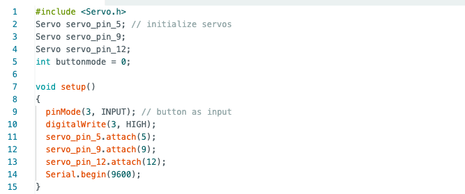
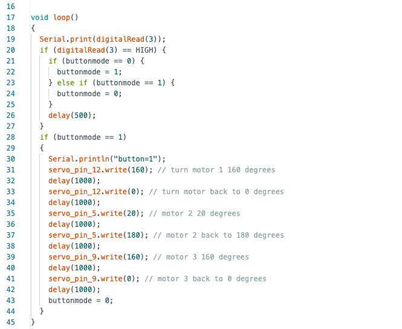

/final project: foldy mcfolderson, a machine that folds clothes
# the main folding apparatus
# ---------------------------------
as a start, i cut up some pieces of cardboard to create a rudimentary t-shirt folding board.
# the code
# ---------------------------------
this is a flowchart of the actions i wanted the three servo motors to do.
 